Лабораторна робота №1. Інсталяція та налаштування Python-середовища
Документ зроблено за допомогою Quarto
Мета: quick start для роботи з python3 у середовищі IDE PyCharm системою контроля версій git.
Виконання завдань для самостійної роботи
- Завантажити і встановити
Python.- Завантаження
PythonнаUbuntuза допомогоюapt: 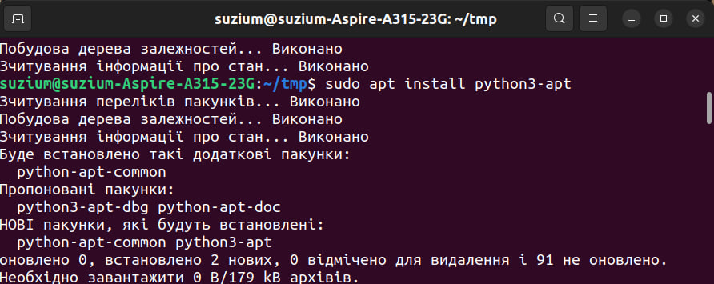 - Перевірка роботи
Python: 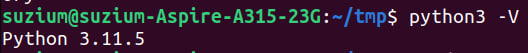
- Завантаження
- Завантажити, встановити і налаштувати IDE PyCharm у відповідності з інструкціями, описаними вище
- Завантаження
PyCharmізSnap: 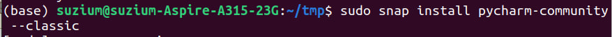 - Лого
PyCharm: 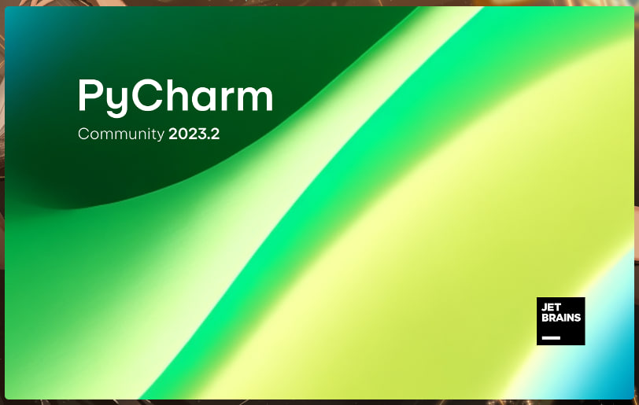
- Завантаження
- Завантажити, встановити і налаштувати систему контроля версій Git на вашому робочому комп’ютері.
- Завантаження
Gitза допомогоюapt: 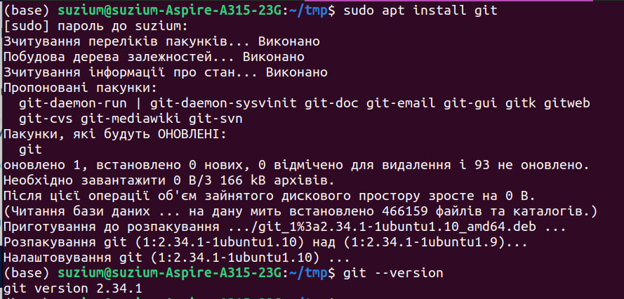
- Завантаження
- Створити акаунт на GitHub та стоврити в ньому новий проєкт з іменем StudentLastName_project.
- Створення відкритого репозиторію (посилання на нього): 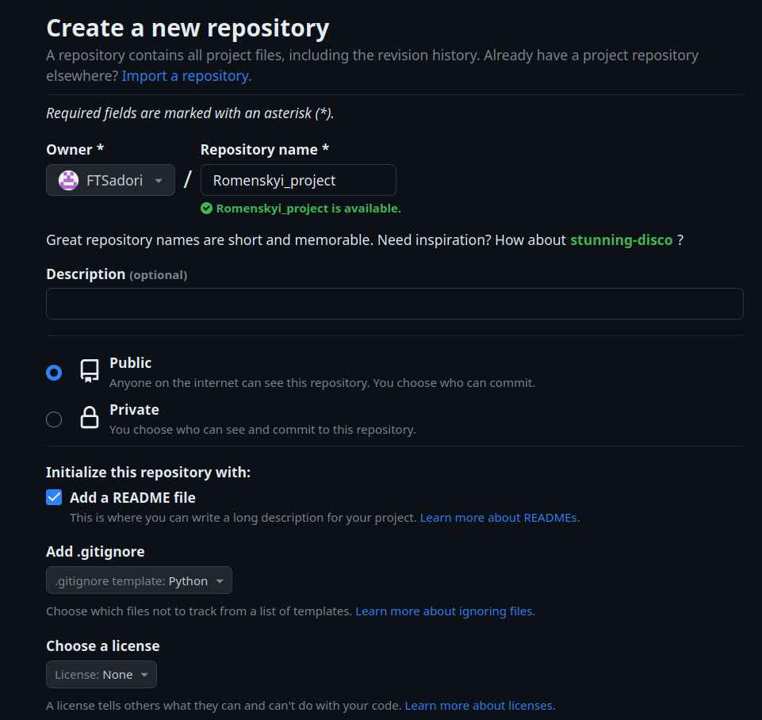
- Створення відкритого репозиторію (посилання на нього): 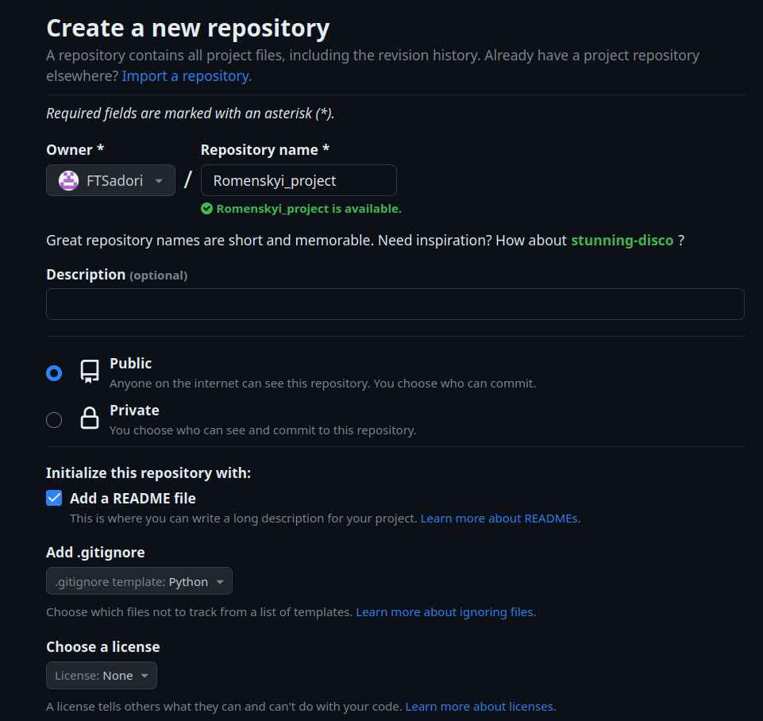
- Налаштувати зв’язок
PyCharmзGit.- Реєстрація на
GitчерезPyCharm. Налаштування зв’язку із репозиторієм: 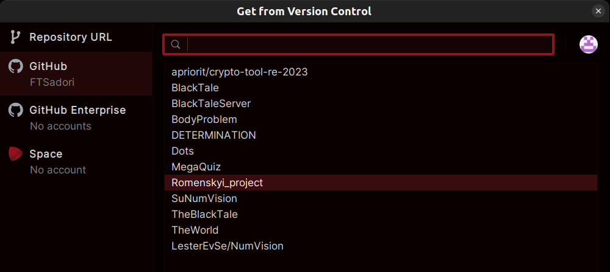
- Реєстрація на
- Налаштувати зв’язок
PyCharmз віддаленим репозиторієм наGitHub.- Клоновані файли із репозиторія: 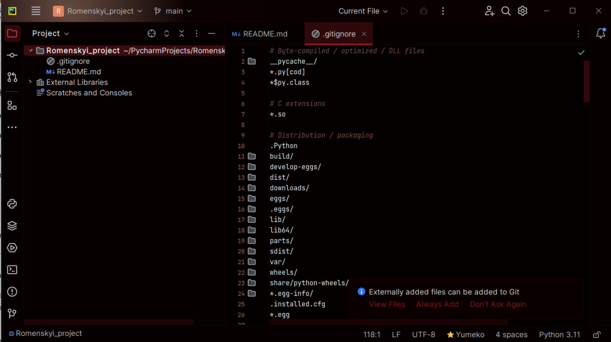
- Створити файл lab_1_StudentLastName.py з кодом, який виводить фразу “Привіт, Ваше Прізвище”.
- Додання файлу, що виводить необхідний рядок: 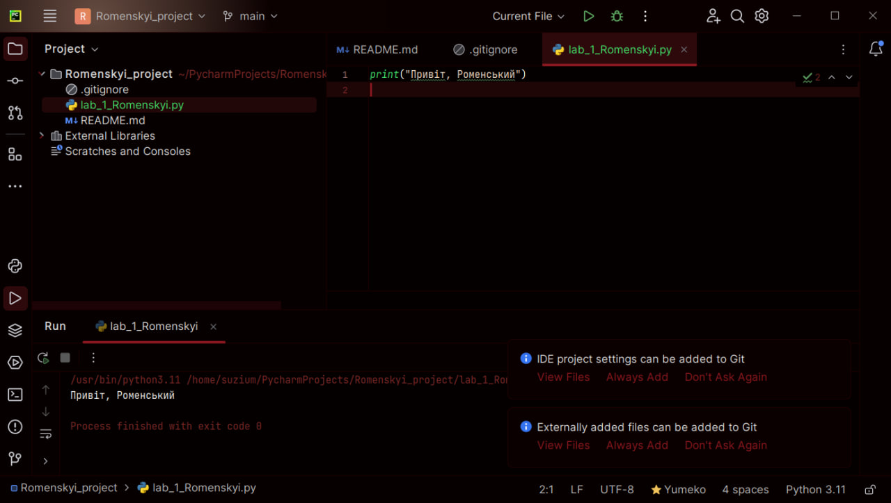
- Закомітити файл у локальний репозиторій.
- Використання
Gitчерез термінал: 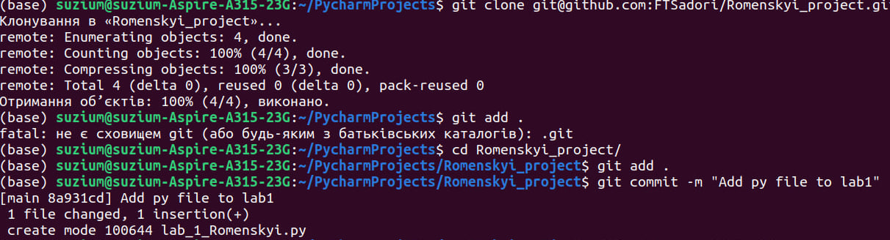
- Використання
- Відправити (“запушити”) поточну версію Git-проєкта у віддалений репозиторій на
GitHub.- Використання
Gitчерез термінал: 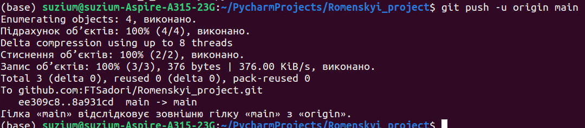
- Використання
- Звіт має складатися з файлу (за основу взяти цей Python-зошит) з відповідними скріншотами
lab_1_StudentLastName.ipynb. У звіті має бути посилання на Ваш GitHub-репозиторій з Вашим проєктом та відповіді на контролі запитання.
Відповіді на контрольні запитання
- У чому відмінність інтерпретатора від компілятора? Python – компілятор чи інтерпретатор?
- Що інтерпретатор, що компілятор, є трансляторами, що перекладають мову високого рівня на машинний код. Але відмінність в тому, що компілятор перед виконанням програми перетворює файли в об’єктні, що далі об’єднаються у виконавчий файл, який виконується комп’ютером на максимальній швидкості. В той же час інтерпретатор кожен раз переводить файл рядок за рядком, переводячи його із мови високого рівня, на машинний код. Таким чином, інтерпретатор працює повільніше, але має варіант виконувати код у стилі “терміналу”, вводячи рядки.
- Що таке IDE PyCharm?
- IDE (integrated development environment - інтегроване середовище розробки) - це середовище, що містить велику кількість програм для спрощення процессу програмування. В той час PyCharm був розроблений для програмування на Python.
- Що таке система контроля версій (СКВ) і для чого вона призначена? У чому принципова відмінність СКВ SVN та GIT?
- Система контроля версій вирішує питання контролю командної розробки, дозволяє зберігати зміни на віддаленому репозиторії та відкатувати їх, якщо буде необхідно. SVN є централізованою (всі дані зберігаються в одному місці), коли Git є розподіленою.
- Що відбувається при виконанні команди
git add .?- Під час виконання данної команди ми додаємо всі дії із зміненими/новостворенними/видаленними файлами (що не містяться у .gitignore) для подальшого коміту.
- Що відбувається при виконанні команди
git commit?- Данною командою ми зберігаємо зміни в нашому локальному репозиторії.
- Якою Git-командою виконується розміщення локальної копії Git-репозиторію проєкта на віддаленому, що знаходиться на GitHub?
- Щоб відправити зміни, зроблені локально, до віддаленого репозиторія, необхідно виконати команду
git push -u origin master
- Щоб відправити зміни, зроблені локально, до віддаленого репозиторія, необхідно виконати команду
Висновок
Під час лабораторної роботи було засвоєно навички по встановленню мови програмування python3, системи контролю версій Git, а також IDE PyCharm. Також було створено репозиторій на GitHub та вивчено базові команди по роботі із ним.